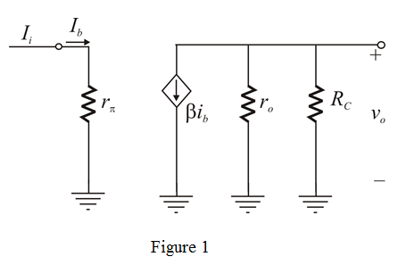
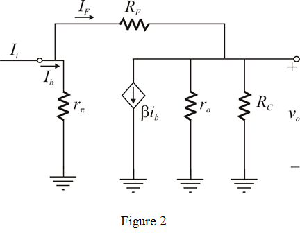

From Figure 2, input voltage  is zero.
is zero.
Feed-back current is,
Thus, feed-back factor is,
Thus, feedback factor of the trans-resistance amplifier,  is .
is .
Refer to the circuit diagram of feedback trans-resistance amplifier in Figure P10.30 in the textbook.
Draw the small signal equivalent circuit.

From Figure 1, the output voltage of the circuit is,
Where is nothing but .
…… (1)
Define open loop gain.
Recall equation (1).
Substitute for
If open loop gain becomes:
Thus, open loop gain of the trans-resistance amplifier, is .
Draw the small signal equivalent for feedback circuit.

From Figure 2, input voltage is zero.
Feed-back current is,
Thus, feed-back factor is,
Thus, feedback factor of the trans-resistance amplifier, is .
Substitute for  and
and  for
for  .
.
Thus, closed loop gain of the trans-resistance amplifier,  is .
is .
Recall closed loop gain expression.
Substitute  for
for  and for
and for  and for
and for  .
.
Thus, closed loop gain of the trans-resistance amplifier,  is.
is.